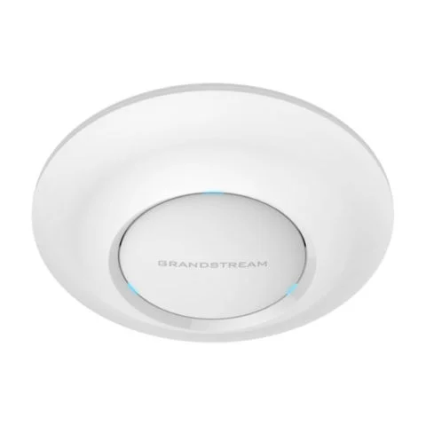
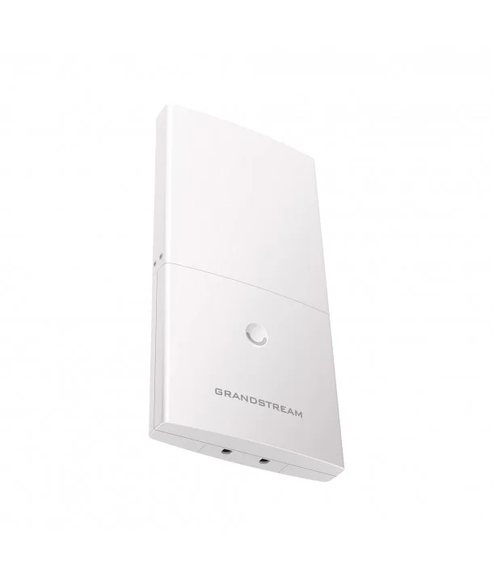

GS-GXV3500
 Características
Características
Codificador/Decodificador de Video IP y sistema de voceo (PAS)
GS-GXV3500
Codificación de video analógico
Decodificación de video IP en tiempo real con
compresión H.264
Potente y flexible sistema megafónico de voz (PAS)
Ofrece un cliente SIP/VoIP de video y audio de 2 vías
PoE integrado.
Conexión con vídeo a teléfonos móviles y video
teléfonos SIP
Apoyo 8 Mb pre / post evento tampón de grabación.
Total compatibilidad con ONVIF
GS-GWN7600
 Características
Características
Punto de acceso inalámbrico 802.11ac de alto rendimiento
GS-GWN7600
Compatibilidad con hasta 16 SSID por punto de
Acceso y 450+ clientes simultáneos.
Tecnología MU-MIMO 2x2:2 de doble banda, Alcance
de cobertura de hasta 165 metros.
2 puertos Ethernet 10/100/1000 Base-T con
detección automática.
2 antenas internas de 2.4 GHz, ganancia de 3 dBi, 2
antenas internas de 5 GHz, ganancia de 3 dBi.
El controlador integrado permite al GWN7600
detectar y aprovisionar automáticamente y adminis-
trar hasta 30 GWN76XX en una red.
GS-GWN7610

Características
Access Point AC, soporta 16SSIDS, 250 clientes concurrentes.
GS-GWN7610
Compatibilidad con hasta 16 SSID por radio y hasta
250+ clientes WiFi simultáneos
Tecnología 3x3: 3 MIMO de banda dual , red de hasta
1,75 Gbps, amplia cobertura de
Dos puertos Gigabit con soporte para PoE / PoE +,
puerto USB175 metros
Antenas: 3x2.4GHz, ganancia 3dBi.
El controlador de aprovisionamiento incorporado
fácil de usar permite a cualquier GWN7610 gestionar
redes de hasta 50 GWN76XX sin requerir hardware /
software de controlador independiente.
GWN7600LR

Características
Punto de Acceso Wifi 802.11ac con Tecnología Wave-2 de Largo Alcance
GWN7600LR
Compatibilidad con hasta 16 SSID por Punto de
Acceso y 450+ clientes simultáneos.
2x2:2 2.4GHz (MIMO), 2x2:2 5GHz (MU-MIMO), rango
de cobertura hasta 300 metros.
El controlador integrado permite que el GWN7600LR
detecte y aprovisione automáticamente y administre
hasta 30 AP WiFi de la serie GWN en una red
2 puertos Ethernet 10/100/1000 Base-T con
detección automática.